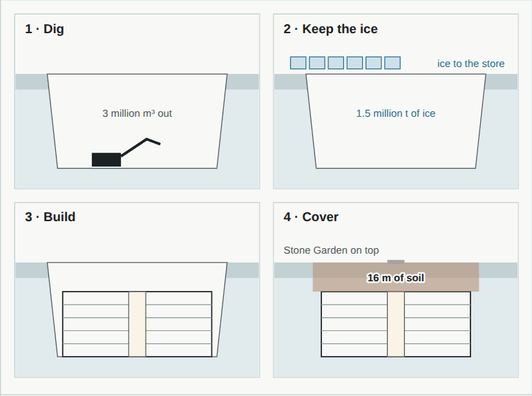

Construction
Building with Mars soil, and under it. The materials have been tested on Earth with copies of Mars soil; the hardest part is not gravity or wind but the air pressure inside, pushing out.
MaterialsWays to build with Mars soil
What the soil is: crushed basalt, grains of olivine, pyroxene and feldspar, with rusty iron oxides that make it red, and salts such as sulfates and perchlorates. All of these ways to build with it have been tested on Earth with copies of Mars soil:
- Sintering: heat the soil to about 1,100 °C and its grains fuse into a hard ceramic, with microwaves, lasers or focused sunlight.
- Sulfur concrete: Mars soil has sulfur. Melted at about 130 °C and mixed with soil, it sets into a concrete that needs no water; tests reached about 50 MPa, as strong as good concrete.
- Pressed bricks: engineers in California pressed a copy of Mars soil into strong bricks with no binder at all, held together by its iron oxides.
- 3D printing: NASA's 3D-Printed Habitat Challenge (2015–2019) ended with robots printing habitats; the winner, MARSHA by AI SpaceFactory, used basalt fibre in a plant-based plastic.
- Burying: soil piled on top is the simplest shield of all.

The real loadThe air inside pushes out
A building kept at 70 kPa, the air pressure 3,000 m up a mountain on Earth, pushes up on each square metre of its roof as hard as 7 tonnes would press down on Earth. Outside there is almost nothing to push back. On Earth, buildings are built to hold weight up; on Mars they must also hold the air in, like a pressure vessel.
Soil balances it. At Mars gravity a metre of soil (1.7 t/m³) presses down with 6.3 kPa, so 11 m of soil balances 70 kPa, and 16 m balances a full Earth atmosphere. The same soil stops the radiation: see shielding.
1 m of soil: 1,700 kg × 3.71 m/s² ≈ 6.3 kPa
70 kPa ÷ 6.3 kPa per m ≈ 11 m of soil
Frozen ground, cold and dustThe rest of the job
Frozen ground. Much of the mid-latitude ground is ice-rich and frozen hard, so the walls of a pit stand steep. A warm building must not melt the ice it stands in, so its walls and floor are insulated, as buildings on permafrost are in Canada and Alaska.
Cold and daily swings. Outside, materials cool to −80 °C at night and warm again by day: joints, seals and glazing must take that every sol for decades.
Dust. The fine dust clings to suits and gets into seals. Airlocks with dust rooms, or suitports, where the suit stays outside and the person climbs in through its back, keep it out of the rooms.
Wind and quakes are small loads on Mars: see every factor.
Robots dig a pit about 70 m deep, 3.1 million m³, in ground whose walls stand steep because they are frozen. The Pentagon's walls, floors and roof are sintered panels made from the soil that came out, and 16 m of soil goes back on top. How the Pentagon is built →
SourcesWhere the numbers come from
- L. Wan, R. Wendner and G. Cusatis (2016), A novel material for in situ construction on Mars: experiments and numerical simulations. Construction and Building Materials 120, 222. doi:10.1016/j.conbuildmat.2016.05.046 (sulfur concrete)
- B. J. Chow and others (2017), Direct formation of structural components using a martian soil simulant. Scientific Reports 7, 1151 (bricks pressed without a binder).
- NASA Centennial Challenges, 3D-Printed Habitat Challenge (2015–2019).
- NASA Goddard Space Flight Center, Mars Fact Sheet: gravity. The pressure and soil sums are ours, shown above.